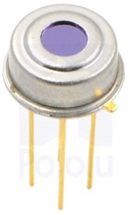
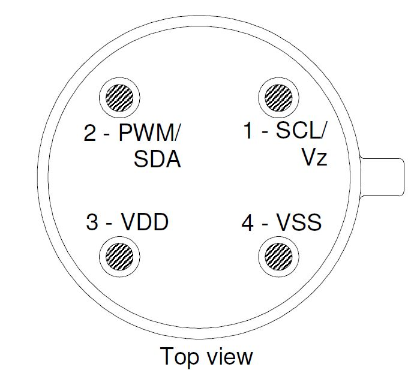

Il sensore di temperatura MLX90614, offre la possibilità di ottenere ottimi rilevamenti di temperatura.
E’ contenuto in una breakout board che si occupa di gestire il sensore, e fornisce tramite interfacciamento con il bus I2C i valori di temperatura.
#include <i2cmaster.h>
void setup(){
Serial.begin(9600);
Serial.println("Setup...");
i2c_init(); //Initialise the i2c bus
PORTC = (1 << PORTC4) | (1 << PORTC5);//enable pullups
}
void loop(){
Serial.println(temp1());
delay(500);
}
float temp1()
{
int dev = 0x5A<<1;
int data_low = 0;
int data_high = 0;
int pec = 0;
i2c_start_wait(dev+I2C_WRITE);
i2c_write(0x07);
// read
i2c_rep_start(dev+I2C_READ);
data_low = i2c_readAck(); //Read 1 byte and then send ack
data_high = i2c_readAck(); //Read 1 byte and then send ack
pec = i2c_readNak();
i2c_stop();
//This converts high and low bytes together and processes temperature, MSB is a error bit and is ignored for temps
double tempFactor = 0.02; // 0.02 degrees per LSB (measurement resolution of the MLX90614)
double tempData = 0x0000; // zero out the data
int frac; // data past the decimal point
// This masks off the error bit of the high byte, then moves it left 8 bits and adds the low byte.
tempData = (double)(((data_high & 0x007F) << 8) + data_low);
tempData = (tempData * tempFactor)-0.01;
float celcius = tempData - 273.15;
float fahrenheit = (celcius*1.8) + 32;
return(celcius);
}
Per usare più MLX90614 contemporaneamente devono avere tutti l’indirizzo I2C diverso, quindi si deve cambiare l’indirizzo I2C di ciascun MLX.
Codice cambio indirizzo I2C: in arrivo...{kind=link}
{kind=link}